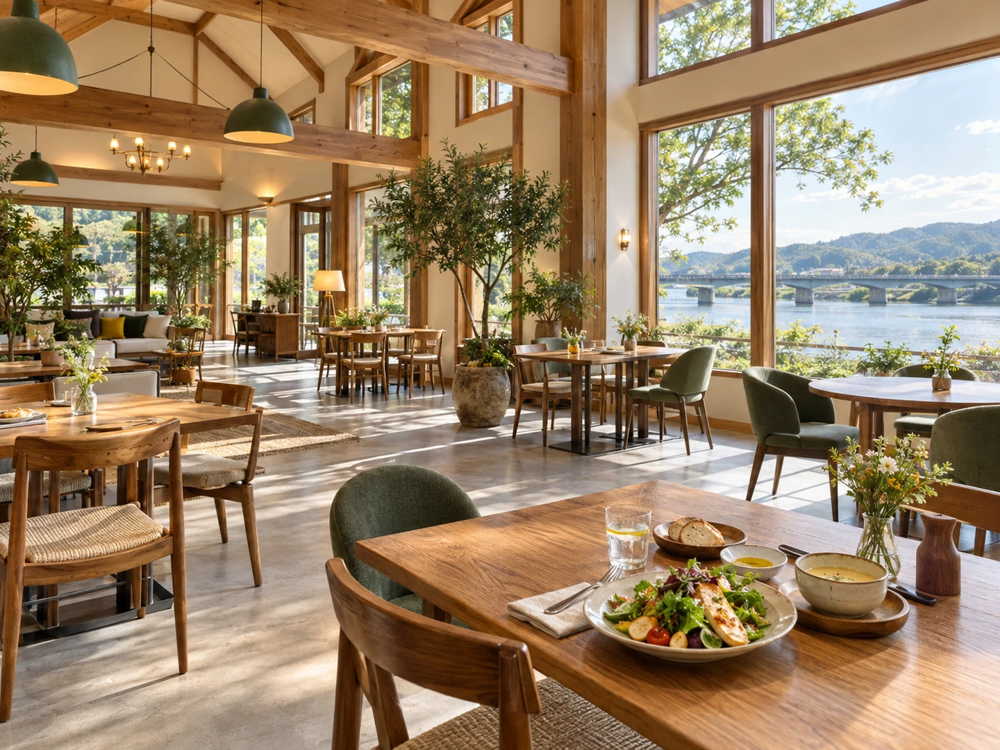

CONCEPT
麺を作るところが、
席から見えます
Bon Cafe は、秋田市新屋船場町にあります。2017年4月26日に開店し、今年で9年目です。 看板には「自家製 生パスタ専門店」とあります。
生パスタ ＝ このお店で作っている麺
パスタは自家製です。製造している様子を、お店の席から見ることができます。もちもちした食感が、来店された方の感想にくり返し出てきます。
天井が高く、木のぬくもりのある店内です。 窓際の席からは、雄物川と秋田大橋が見えます。 車椅子でも入れるつくりで、駐車場は15台分あります。
運営しているのは、社会福祉法人一羊会の就労継続支援B型事業所「One memory」です。 障害のある方の働く場として作られたお店でもあります。 2026年6月には、秋田のタウン誌「マリ・マリ」の特集で取り上げられています。
働く場所であることと、おいしい店であることが、同じひとつの場所で成り立っています。
